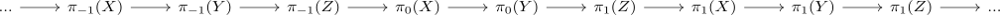
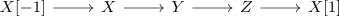
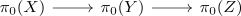
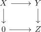

homotopy object functor maps bifiber sequences to long exact sequences
Proposition
Let $\mathcal{C}$ be a stable infinity category equipped with a t-structure. Let $X \rightarrow Y \rightarrow Z$ be a bifiber sequence.
Then the n-th homotopy object functor of a t-structure maps the bifiber sequence to a long exact sequence

implicitly used in 1.2.2.6 ?
at least true in $\mathrm{Mod}(R)$ with the standard t-structure ?
Proof
note that we use the bifiber puppe sequence in a stable category to get

exact
We need to show that

is exact at $\pi_0(Y)$.
zero morphism
note that the composition of two is still the zero morphism, since each sequence fits into a square

and the zero object is still preserved by $\pi_n(-)$ for any $n$.
lift
???